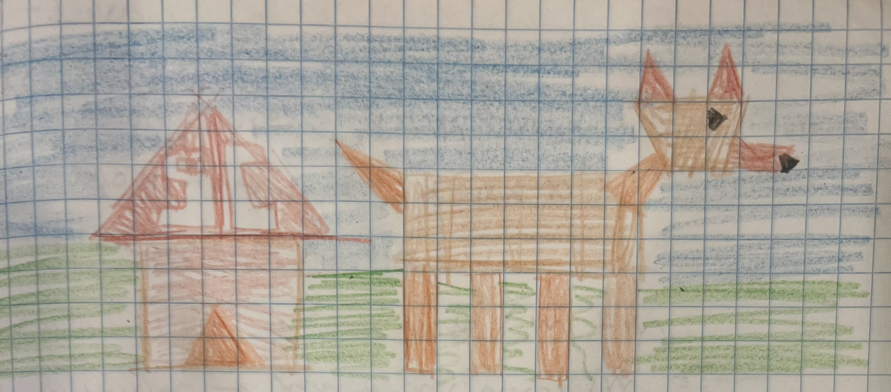

Sydney Chien sjchien@ucsc.edu Awesome Feature: Click mini game. Click the circles before they disappear to earn points.

Drawing Mode:
Red Green Blue
Shape Size: (Circles) Segment Count: 10
Start Game Stop Game
Score: 0 Time Left: 30